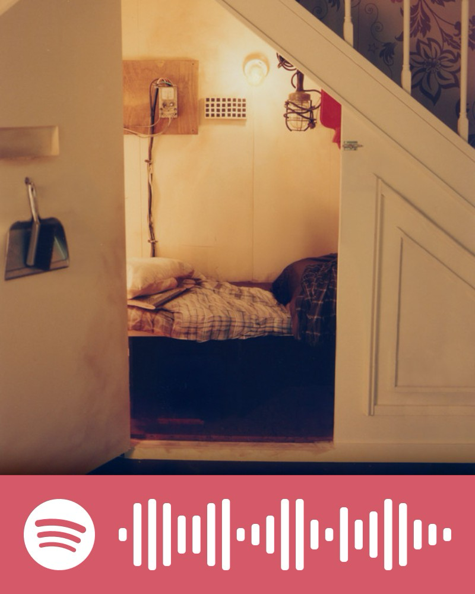
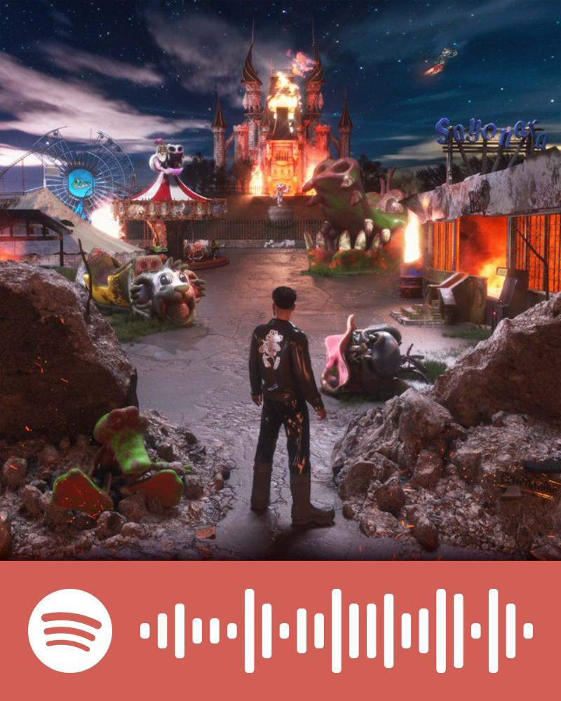
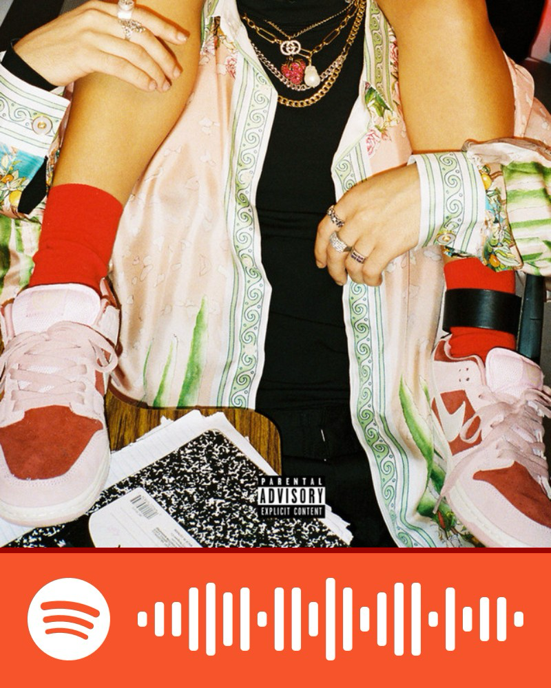

Perdón

Canción 1
Canción 3Esta página es totalmente omitible, entiendo que sea mucho más complicado leer esto.
Así como te agradezco por lo bueno que compartimos, he intentado hacer retrospección en lo malo que pasamos, y no me nace más que pedirte perdón. Ahora me doy cuenta de que no fui la mejor versión de mí en esos momentos, que mi paciencia era muy corta la mayoría del tiempo y sé que muchas veces te hacía sentir muy juzgada. Quiero que sepas que no fue mi intención; solo creo que aprendí a amar de una forma muy rara y lo reflejé en nuestra relación, no juzgándote, sino motivándote de una forma muy rara a ser mejor porque sabía que también tienes un potencial gigante.
Perdón por no hacer los esfuerzos que hacías tú, o porque no sintieras mis esfuerzos como suficientes. Perdón por no haberme interesado tanto en tu vida más personal, amigas y gustos. En su momento atravesé una fase en la que pensaba solo en ti y en mí, no en que lo que somos viene de nuestros gustos y de las personas que nos rodean. Perdón por guardar tantas cosas como privadas, por no abrirme completamente a que me conocieras y pensar que estaba bien estar en esa postura y que tú querías lo mismo.
Sobre todo te quiero pedir perdón por haberte dado una idea de mí distinta a quien fui en la relación. Quiero que sepas que siempre hice lo que consideraba lo mejor para los dos, aunque casi siempre caí en el egoísmo al tomar estas decisiones. También te quiero pedir perdón por habernos relacionado tanto desde que regresaste a Monterrey; mi idea era mantener algo casual y nunca te detuve al darme cuenta de que había sentimientos de nuevo, dejándome sentir lo mismo que tú, otra vez. De verdad lo siento por todos los sentimientos negativos que pude haberte causado los últimos meses.

Canción 2